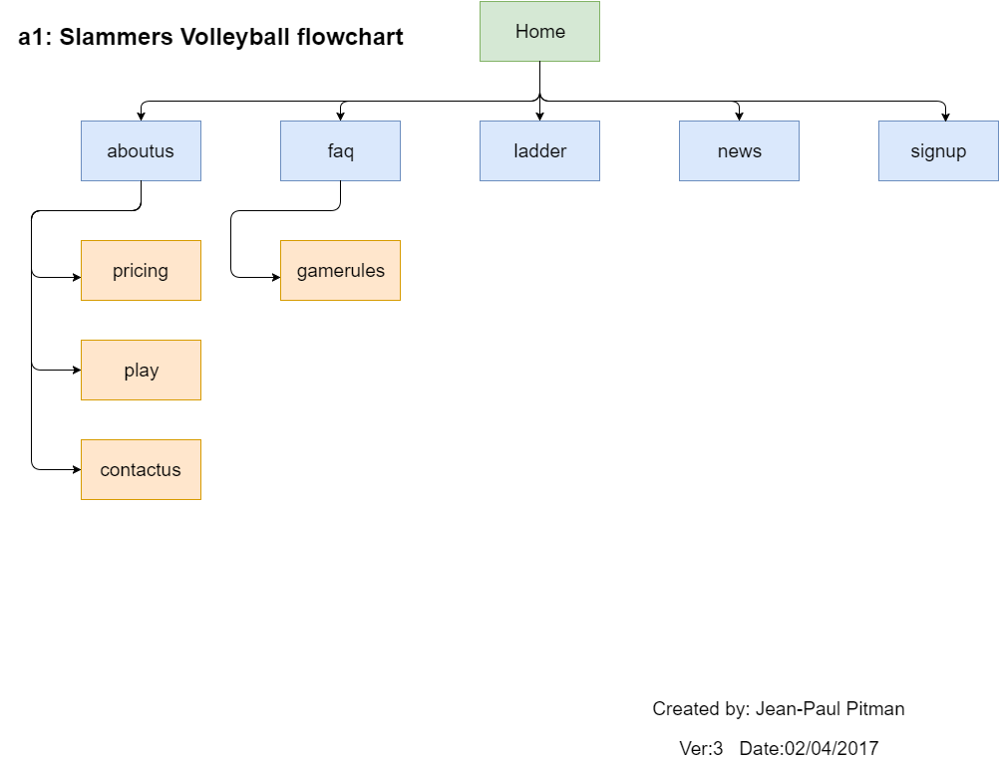

<title>Jean-Paul Pitman</title>
<section>
<h1>CP1406 - Assignment 1 - Project Plan</h1>

<h1>Name: Jean-Paul Pitman</h1>
</section>
<section> 
	<h1>Goals</h1>
	<p>The Primary Goal of the new website is to increase volleyball attendance numbers by 50% through the establishment of a Web-presence for Slammers Beach Volleyball. In addition to the primary goal, two core requirements have also been identified:
		<h3>Core Requirements</h3>
			<ul>
				<li>Attract a younger clientel base.</li>
				<li>Design and implement an online team registration process.</li>
			</ul>
	</p>
</section>
<section>
	<h1>Success Evaluation</h1>
		<p>With no existing website in place, Sucess evaluation will be measured as a direct increase in volleyball attendance numbers. Currently, Voleyball attendance is 100 people per week, the new website will aim to increase attendance to at least 150 people per week. It is expected the Goal of 150 be reached within three months for the website to be deemed successful.</p>
</section>
<section>
	<h1>Target Audience</h1>
		<p>Slammers Beach Volleyball has identified the current member base to be 35-50. However, Slammers Beach Volleyball want to attract a younger audience, 15-30 year olds, young families and their highschool age children. Essentialy the 'Digital Native'.</p>
		<p>The Digital Native - perfers to: shop, paysbills, socialise, date, and most importantly, Google from a mobile device first. If your business's first contact with a Digital Native is a poorly rendered website, it is likley you just lost their respect and business.</p>
		<p>Designing to target the Digital native will be acheived by:
		<ul>
			<li>Using Mobile-first design principles</li>
			<li>Bright Funky Colors and Fonts</li>
			<li>Modern responsive interface</li>
			<li>Fun and Exciting imagery</li>
		</ul>
</section>
<section>
<h1>Site Flowchart</h1>
		
</section>
<section>
<h1>GitHub Repository</h1>
<a href="https://github.com/jeanpaulpitman/Vollyball" alt="github link" target="_blank">https://github.com/jeanpaulpitman/Vollyball</a>
</section>